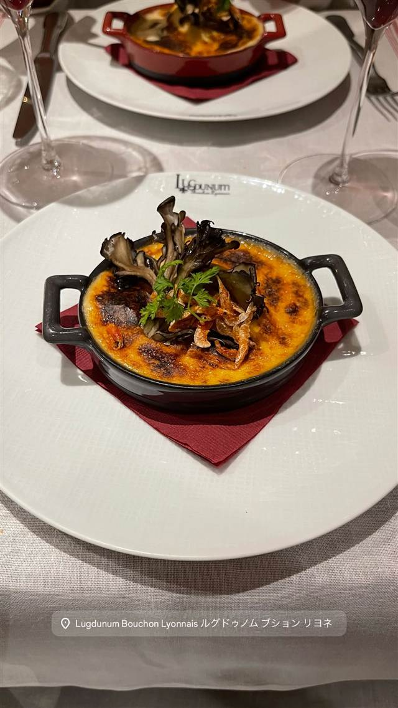

ルグドゥノム ブション リヨネ（Lugdunum Bouchon Lyonnais）
日本初の「ブション・リヨネ」、10年以上ミシュラン一つ星を守る
Lugdunum Bouchon Lyonnais ルグドゥノム ブション リヨネ
WHY GO
リヨンの大衆食堂文化を100年前のらせん階段やガレの照明で再現した日本初の店
リヨン出身のシェフ、クリストフ・ポコ氏が2007年に神楽坂で開いた、日本初の「ブション・リヨネ」。店名はリヨンの古代ローマ名に由来し、ミシュラン一つ星を長年守り続けている。
TRIVIA
豆知識
- 店名「Lugdunum（ルグドゥノム）」はリヨンの古代ローマ時代の呼称
- 2011年から10年以上連続でミシュラン一つ星を守り続けている
REVIEWS
世間の評判
3.70食べログ
本格リヨン料理と手厚い接客
- 本格的なリヨン郷土料理と丁寧に作られた調理内容を評価する声が多い
- ワインの品揃えの豊富さとペアリングの提案の的確さを評価する声が多い
- 料理の内容に対して価格の割に感動は少なかったと感じる声もある
食べログ 口コミ962件
| 創業 | 2007年9月開業 |
|---|---|
| 系譜 | 日本初となる「ブション・リヨネ」（リヨンの大衆食堂スタイル）を再現した店 |
| 看板 | 鶏肉のクリーミーソース、蕎麦粉のガレット |
| こだわり | 1900年代のらせん階段やエミール・ガレ作のアールデコ照明など、リヨンのブション文化を内装から再現している |
| 掲載・評価 | 2011年からミシュランガイド東京で一つ星を10年以上連続獲得 |
| どこから | 都心 |
| 営業時間 | 月・火 休み 水〜日 12:00-15:00、18:00-22:30 |
| 予算 | 昼 ¥4,000～¥4,999 夜 ¥10,000～¥14,999 |
| 定休日 | 月火 |
| 場所 | 飯田橋 東京都新宿区神楽坂 |
| メモ | 飯田橋・神楽坂エリア、予約推奨 |
食べたもの：グラタン / ワインボトル
NEARBY
近い店・同じ系統の店
-
 ピザ 飯田橋駅・牛込神楽坂駅
400℃ PIZZA TOKYO
岡山本店直系、4日仕込みの高加水生地で焼く蜂蜜がけピッツァ
夜 ¥10,000～¥14,999
ピザ 飯田橋駅・牛込神楽坂駅
400℃ PIZZA TOKYO
岡山本店直系、4日仕込みの高加水生地で焼く蜂蜜がけピッツァ
夜 ¥10,000～¥14,999
-
 パスタ 飯田橋
カルボナーラ専門店 ハセガワ 神楽坂（HASEGAWA）
卵とチーズの配合を何千回も試作し昆布と鰹節の出汁を隠し味にする
夜 ¥3,000～¥3,999
パスタ 飯田橋
カルボナーラ専門店 ハセガワ 神楽坂（HASEGAWA）
卵とチーズの配合を何千回も試作し昆布と鰹節の出汁を隠し味にする
夜 ¥3,000～¥3,999
-
 イタリアン 牛込神楽坂駅
リストランテ カルミネ
1987年に日本初のイタリア人オーナーシェフとして開業した店
昼 ¥3,000～¥3,999 夜 ¥6,000～¥7,999
イタリアン 牛込神楽坂駅
リストランテ カルミネ
1987年に日本初のイタリア人オーナーシェフとして開業した店
昼 ¥3,000～¥3,999 夜 ¥6,000～¥7,999
-
 煮干し・魚介 神楽坂駅
サーモンnoodle 3.0
サーモン一匹を骨まで使い切る世界初のサーモン専門ラーメンを名乗る
昼 ¥1,000～¥1,999 夜 ¥1,000～¥1,999
煮干し・魚介 神楽坂駅
サーモンnoodle 3.0
サーモン一匹を骨まで使い切る世界初のサーモン専門ラーメンを名乗る
昼 ¥1,000～¥1,999 夜 ¥1,000～¥1,999
-
 焼肉 飯田橋
焼肉家 KAZU 神楽坂
全席個室で味わう佐賀牛・仙台牛などA5厳選和牛
昼 ¥1,000～¥1,999 夜 ¥6,000～¥7,999
焼肉 飯田橋
焼肉家 KAZU 神楽坂
全席個室で味わう佐賀牛・仙台牛などA5厳選和牛
昼 ¥1,000～¥1,999 夜 ¥6,000～¥7,999
-
 鉄板中華 飯田橋駅・牛込神楽坂駅
鉄板中華 青山シャンウェイ神楽坂
中華鍋を使わず鉄板で焼く名物の毛沢東のスペアリブ
昼 ¥1,000～¥1,999 夜 ¥5,000～¥5,999
鉄板中華 飯田橋駅・牛込神楽坂駅
鉄板中華 青山シャンウェイ神楽坂
中華鍋を使わず鉄板で焼く名物の毛沢東のスペアリブ
昼 ¥1,000～¥1,999 夜 ¥5,000～¥5,999